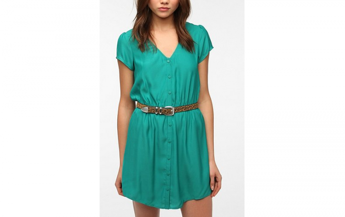

| [Banner] | ||||||
|
Spring A Night OutThis Spring the perfect evening outfits consist of cutouts, lace, the best leather for Spring, and open toe shoes. Farewell, modesty. With exposed patches of skin at the chest, waist, and everywhere else, it's clear that the cutout is having its sexy little moment come spring. Lace this year is being used as both accents and the main attraction, it was spotted all over the runway this year! Whether it is a dress covered in lace, or a little fringy at the bottom of a blouse, it goes perfect for the Spring weather! Leather is not just for the Fall and Winter weather, it has become very popular this year! As fashion-lovers turn toward fall trends, the spring 2013 collections have good news in store. Leather, big for autumn, won't be leaving the scene any time soon! And what better way to finish off a perfect outfit than with some amazing shoes! Whether it is an open toe to give that airy feel for the seaon, or a pointed colors flat to add a great accent to the outfit, they both work amazingly! |
|||||